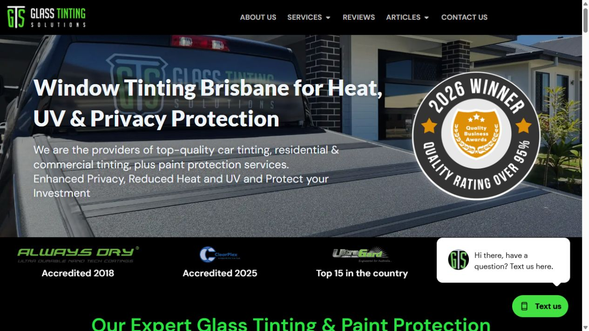

SEO strategy & campaign management
Plan SEO roadmaps around business goals, keyword opportunities, competitors and technical priorities. Track performance and report on the work.
I manage SEO campaigns and lead SEO specialists and content writers. I also work with developers on technical fixes.
Recorded at #1 for “glass tinting brisbane”. Explore the organic and local search positions for this project.
Browse all 17 projects
Window tinting · Brisbane

The portfolio records #1 positions for wedding bouquet and Southbank florist searches in Melbourne.
View keyword positionsSearch by business, market or keyword. Every project opens its full set of recorded positions.
SEO portfolio. Website previews show current sites; keyword positions are from November 2026 and can change.
maddenslawyers.com.au
Selected organic positionivleaguedrips.com
Selected organic positionglasstintingsolutions.com.au
Selected organic positionthesmilespot.com.au
Selected organic positionsunloverheating.com.au
Selected organic positionlifestyleorthodontics.com.au
Selected organic positionholdsworthhousedental.com.au
Selected organic positionnewsteadsmiles.com.au
Selected organic positionroyalparadedentalclinic.com.au
Selected organic positionspecialistendosydney.com.au
Selected organic positionkiamadentalspecialists.com.au
Selected organic positionluminadental.com.au
Selected organic positionkatehillflowers.com.au
Selected organic positionmadmiller.com.au
Selected organic positionmlrplasteringinteriors.com.au
Selected organic positiongrowerschoiceseeds.us
Selected organic positionpacificseedbank.com
Selected organic positionNo matching projects. Clear the search and filters to browse the full portfolio.
Campaign strategy, technical recommendations, content planning and team leadership.
Plan SEO roadmaps around business goals, keyword opportunities, competitors and technical priorities. Track performance and report on the work.
Audit crawling, indexing, site architecture, speed and Core Web Vitals. Prioritise technical recommendations and coordinate fixes with developers.
Research keywords and search intent, map them to pages, prepare content briefs, and review metadata, headings, page content and internal links.
Analyse backlink profiles, compare competitor links and identify link-building opportunities.
Lead SEO specialists and writers, mentor team members, and coordinate technical work with developers.
I turn audit findings and keyword research into campaign priorities, content briefs and technical recommendations.
I review SEO and content work, coordinate technical fixes with developers, and report on rankings, traffic and conversions.
SEO roles across agency and client campaigns.
SEO Specialist
Managed technical, on-page, content and off-page SEO across client websites. Prepared strategies, audits, content briefs and performance reports.
SEO Team Leader
Led SEO specialists, developers and content writers. Owned SEO roadmaps, technical priorities, content planning and campaign reporting.
SEO Team Leader
Led SEO execution across client accounts, managed specialists and writers, and coordinated technical SEO work with developers.
Senior SEO Manager
Managed SEO strategy, audits, keyword research, content planning, link-building campaigns and client performance reporting.
Ahrefs · Semrush · Screaming Frog · Google Search Console · Google Analytics · Google Keyword Planner · SurferSEO · Frase · WordPress
Send your website address, target market and the SEO work you need help with. For campaign planning, ongoing SEO or team support, we can start with a discovery call.